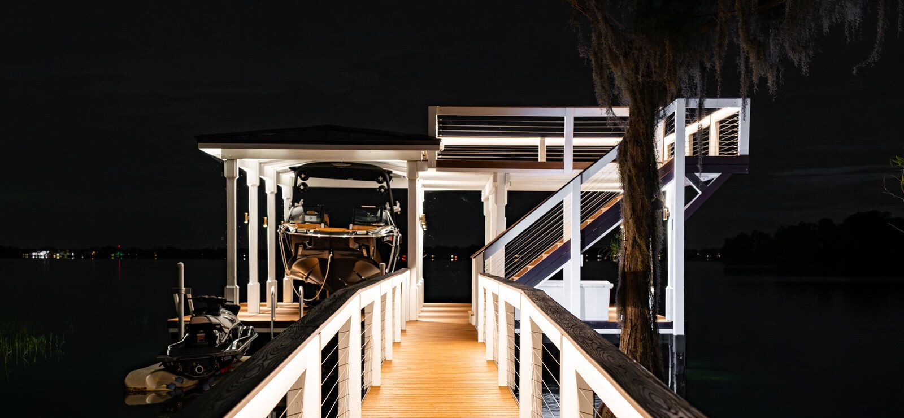
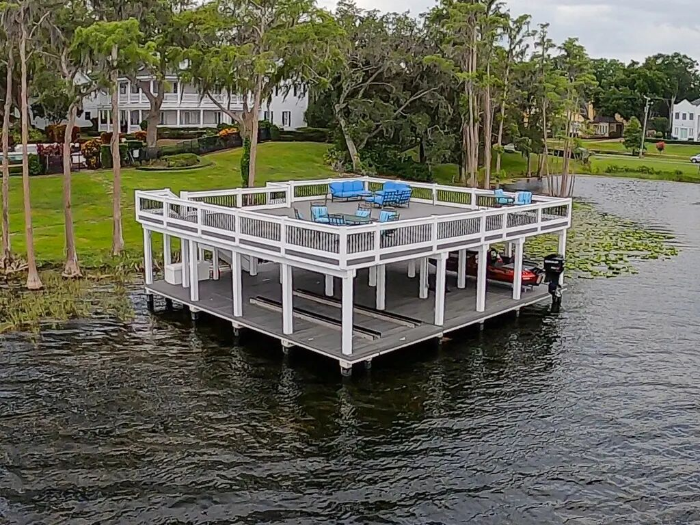
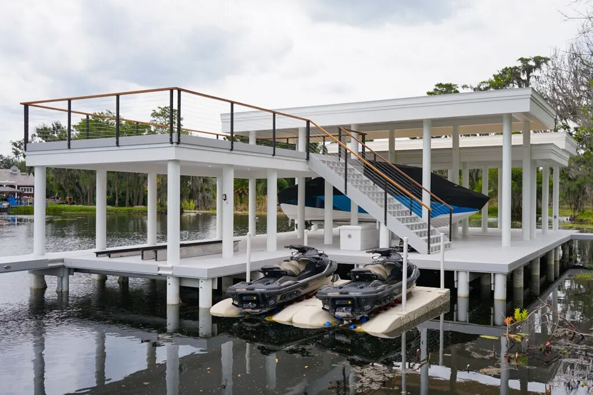
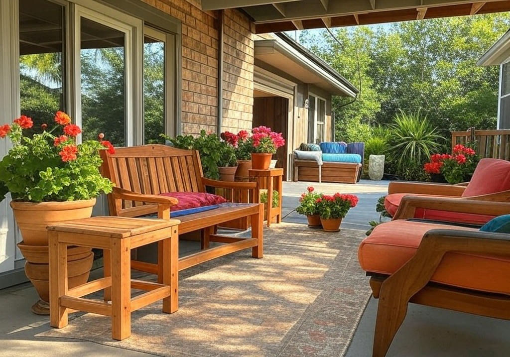
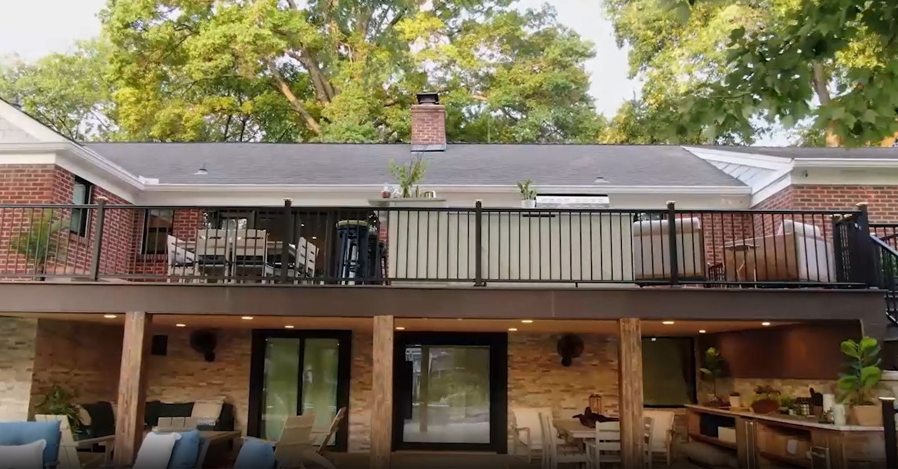
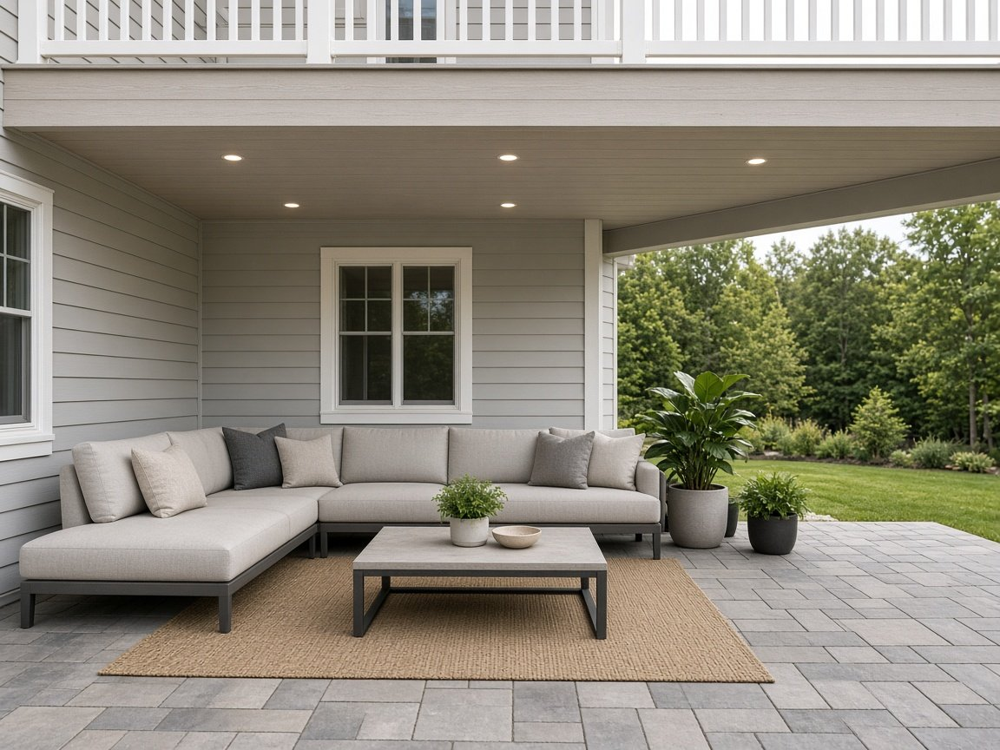
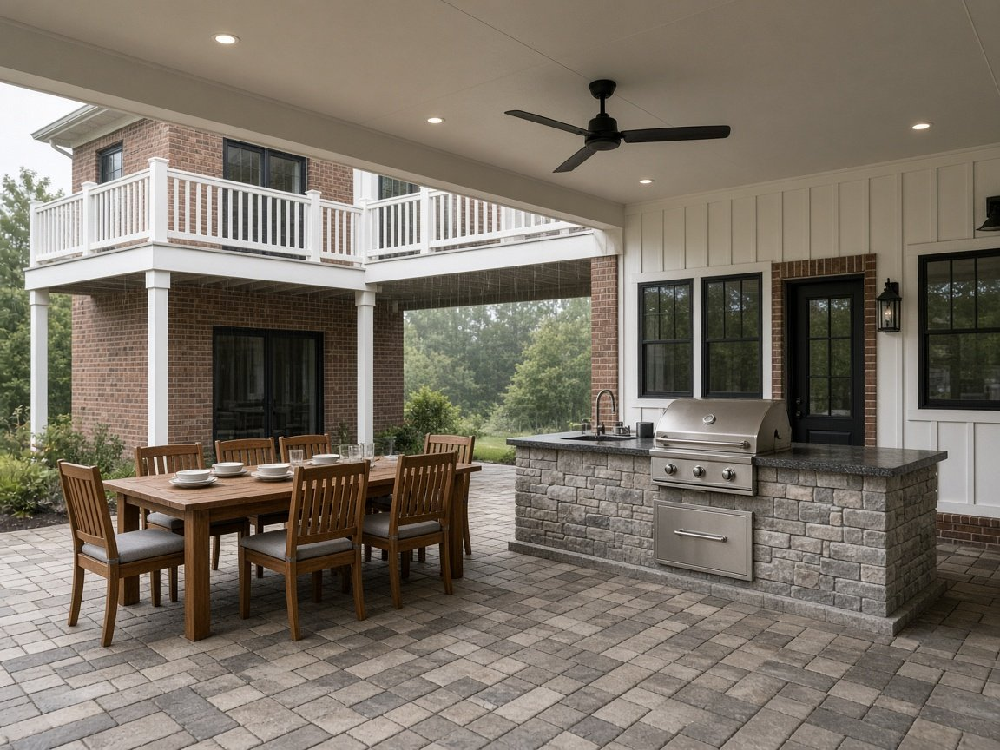
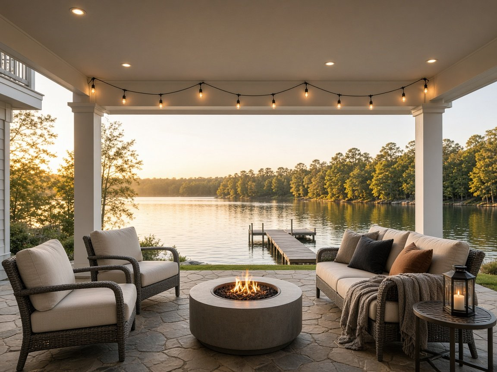

Decks and the space below
Gallery
Elevated decks, covered patios, and the usable space underneath. Browse the photos, tap any image to enlarge it, then request samples or a quote for your own project.

















Every project needs its own review. Framing, drainage pitch, flashing, fastening, discharge, and open-side weather exposure all affect the finished space.
Next step
See it on your own deck.
Hold the colors next to your home, or share your deck size and plans for a project quote. No obligation.